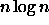
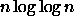

Þann 3. til 5. verður haldið í fyrsta sinn alþjóðleg ráðstefna í tölvunarfræði af fullri stærð. Þetta er SWAT ráðstefnan svokölluð, eða Scandinavian Workshop on Algorithm Theory.
Viðfangsefni ráðstefnunnar, eins og nafnið gefur til kynna, eru reiknirit og gagnagrindur. Verkefnin eru tekin formlegum tökum, en aldrei er farið of langt frá þeim aragrúa af hagnýtingu sem byggt er á. Haldnir verða 34 fyrirlestrar, hver upp á 25 mínútur. Einnig eru 3 boðsfyrirlestrar, þar sem 'atórítet' eru sérstaklega fengin til að draga upp mynd af nýjum sviðum eða óvæntum niðurstöðum er fengist hafa síðustu ár við merk verkefni.
SWAT er haldin annað hvert ár á sitt hverju Norðurlandanna. Í ár er hún haldin í fimmta sinn og því er röðin eðlilega komin að Íslandi. Henni er stýrt af nefnd fimm manna frá sitt hvoru landinu, og er Hjálmtýr Hafsteinsson íslenski meðlimurinn. Hann og undirritaður hafa séð um skipulagningu ráðstefnunnar í ár.
SWAT hefur það umfram margar aðrar ráðstefnur að valið er mjög stíft úr fjölda innsendra greina í þá fyrirlestra sem boðið er upp á. Til dæmis í ár voru valdar af 14 manna nefnd aðeins 34 greinar til birtingar þrátt fyrir að 96 greinar hafi verið sendar inn (sem flestar voru um margt ágætar rannsóknir). Því er nokkur trygging í að greinar sem voru valdar séu vel ritaðar, fjalli um áhugavert og hagnýtanlegt efni, og innihaldi nýjar og virkilega merkilegar niðurstöður.
Þrír þekktir vísindamenn hafa verið fengnir til að halda sérstaka yfirlitsfyrirlestra. Noga Alon er einn færasti maður innan þess sviðs stærðfræðinnar sem er hvað mest nýtt í tölvunarfræði: fléttufræði, eða combinatorics. Sérstaklega hefur hann átt mikinn þátt í að umbylta viðteknum aðferðum með því að beita slembun. Ein helsta bylting síðustu ára við hönnun reiknirita er notkun slembinna aðferða. Þær einfalda oft erfið verkefni, og má síðan umbreyta yfir í venjulega óslembnar aðferðir á ýmsann hátt. Alon hefur verið frumkvöðull helstu aðferða við að afslemba reiknirit, og hann mun lýsa okkur um þau þekkingarsvið hér á SWAT.
Arne Andersson er prófessor við háskólann í Lund og mun tala um hreint ótrulegar nýlegar niðurstöður um verkefni sem allir þekkja: röðun og leitun. Flestir nota

aðferðir og "vita" að ekki sé hægt að gera betur. Andersson og hans menn hafa hinsvegar komið fram með mun hraðvirkari aðferð, eða með
tímaflækju. Hugmyndin er að framkvæma ekki eingöngu samanburði heldur nýta minnið og beina adresseringu. Hann mun lýsa þessum og tengdum aðferðum og tengja þessar niðurstöður síðan þeirri brjóstvitsþekkingu að aðferðir eins og hökkun virka vel þrátt fyrir slæma verstafalls flækju.Mike Paterson er prófessor í Warwick í Englandi og er einn vinsælasti fyrirlesari í Evrópu. Fyrir utan miklar eigin rannsóknir, er hann þekktur fyrir að gera flókna hluti einfalda. Hann mun hér ræða um annað verkefni sem allir þekkja: það að finna miðgildi í óröðuðum lista.
Stefna SWAT er að halda tiltölulega fámenna ráðstefnu, miðað við það sem gengur og gerist, eða um 70-80 manns. Þetta býður upp á óformlegra andrúmsloft sem gerir t.d. byrjendanum mögulegt að rabba við bókarhöfundinn.
Ráðstefnan er mjög alþjóðleg, hvað sem um nafn og staðsetningu má setja, og þáttakendur drífur að víðsvegar frá: Norður, suður og austur Evrópa; Bandaríkin og Kanada; Ísrael, Japan og Hong Kong.
Ráðstefnan verður haldin í Odda, 3. -- 5. júlí. Fyrstu tveir dagarnir eru frá 9:00 til 18:00, en sá síðasti (föstudag) 9:00 til 12:40. Hver dagur hefst á gestafyrirlestri í 50 mínútur, og síðan eru almennir fyrirlestrar í 25 mínútur hver, með kaffi og matarhléum.
Ráðstefnugjald fyrir meðlimi FT er 8.800 krónur. Það innifelur ráðstefnuritið, þáttöku, kaffi og meðlæti, og hádegisverði alla þrjá dagana. Það innifelur einnig móttöku í ráðhúsinu á miðvikudagskvöldi. Þess má geta að ráðstefnuritið eitt sér komið til landsins myndi líklega kosta u.þ.b. það sama ef keypt beint frá útgefanda. Athugið að ráðstefnugjald fyrir útlendu gestina er mun hærra, en inn í því er innifalin skemmtiferð á föstudegi til Gullfoss-Geysi o.s.frv. og kvöldverður á fimmtudegi í Viðey. Þeir sem hafa áhuga á því geta keypt miða (ekki síðar en á miðvikudegi) á kostnaðarverði.
Til að fá dagskrána og frekari upplýsingar, vinsamlegast snúið ykkur til undirritaðs ( mmh@rhi.hi.is, s. 525-4733) eða Hjálmtýs ( hh@rhi.hi.is, s. 525 4932). Einnig má nálgast þessar upplýsingar á netinu, http://www.hi.is/swat96/.
Nauðsynlegt er að skrá sig ekki seinna en mánudaginn 1. júlí (eða að morgni 2. júlí). Einfaldast er að tilkynna þáttöku með tölvupósti á mmh@rhi.hi.is. Innritun hefst síðan í Odda frá klukkan 8:00 á miðvikudeginum.
Notið þetta sjaldgæfa tækifæri á að kynnast hér á heimaslóð nútíma rannsóknum í tölvunarfræði!